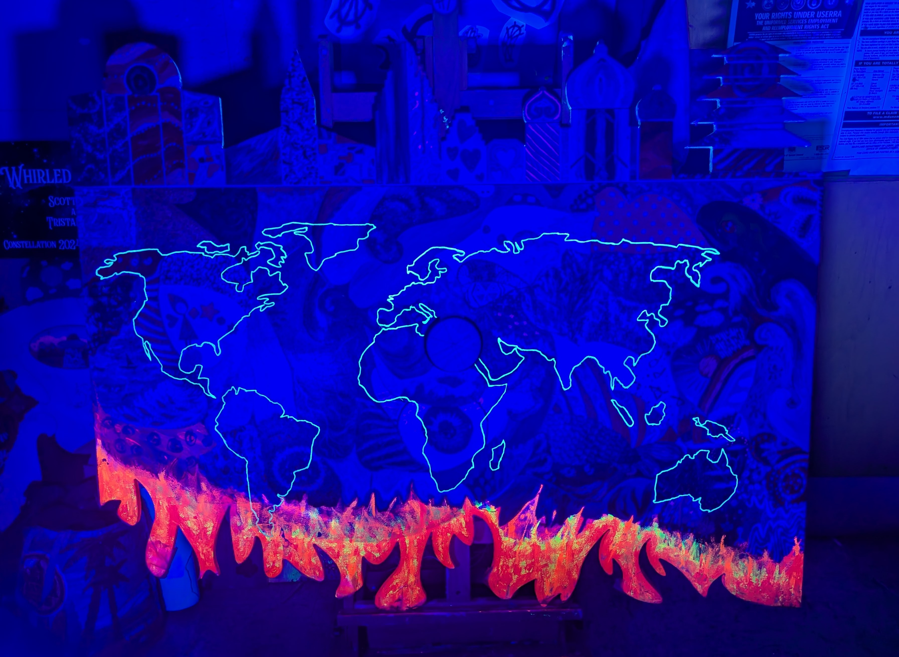

WHIRLED RELIGION
Six Buildings. One Circle. Infinite Flames.
Phase 1: The Blueprint

The geometric layout established the six houses of worship.
Phase 2: The Congregation


Participants filled the flames of hell below and the skies above.
Phase 3: The Unity

The completed work centering on the infinity mirror.
Phase 4: The Glow

The hidden symbols reveal themselves in the dark.